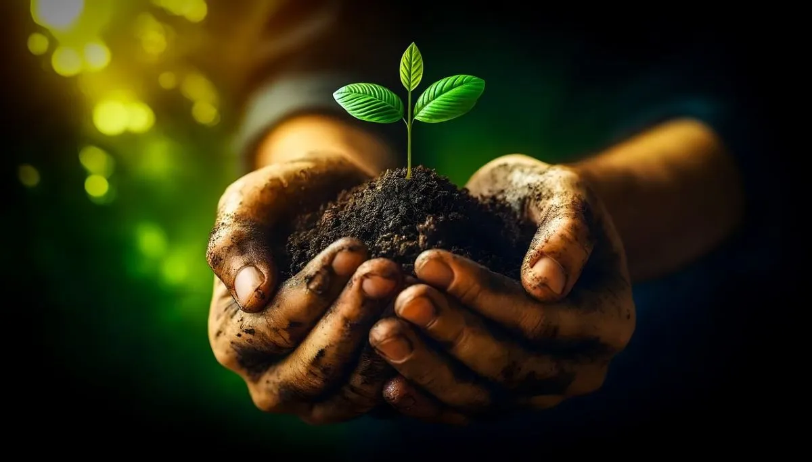

Table of Content
- 1. Environmental Sustainability
- 2. Autonomous Farming Equipment
- 3. Soil and Water Management
- 4. Supply Chain Optimization with AI
- 5. Precision Agriculture
- 6. Customization of Crop Varieties
- 7. Farmer Education & Support
- 8. Advanced Crop Monitoring & Management
- Conclusion
- Frequently Asked Questions
How AI is used in agriculture
AI is transforming agriculture through various innovative applications that improve productivity and sustainability and efficiency. Here’s an advanced exploration of how ai is used in agriculture is making an impact in the agriculture sector.
1. Environmental Sustainability
i) Biodiversity Monitoring
AI tools can monitor biodiversity within agricultural eco systems, identifying the presence of beneficial insects and pollinators and other species. This data can inform management practices that enhance eco system services & support sustainable agriculture.
ii) Carbon Sequestration & Climate Adaptation with AI

The advanced ai is used in agriculture can help farmers adopt practices that improve carbon sequestration in soils. Predictive models assess how different farming practices impact carbon levels and guiding farmers toward more supportable methods that align with weather goals.
2. Autonomous Farming Equipment
i) Smart Tractors & Harvesters in agriculture
Artificial intelligence integration in agricultural new machinery allows autonomous navigation & operation. These vehicles can help agricultural such as planting, tilling and harvesting with minimal human intervention and optimizing field operations and reducing lebor costs.
ii) Automation & Robotics in agriculture
Robotic systems powered by AI can be working for several tasks. Example - From planting seeds to sorting & packing produce. These systems improve working efficiency & reduce the physical demands on human workers.
3. Soil and Water Management
i) Smart Irrigation Systems data
AI driven irrigation systems utilize data to optimize water usage. They adjust watering schedules based on weather forecasts, soil moisture levels and crop needs, significantly reducing water waste & improving plant health.
ii) Advanced Soil Health Monitoring
Artificial intelligence (AI) algorithms analysed data from soil sensors to evaluate pH levels, moisture content & nutrient availability. This information helps farmers tailor their soil management practices & improving crop health & yield.
4. Supply Chain Optimization with AI
i) Demand Forecasting for agriculture:
Artificial intelligence (AI) data models can analyse market trends, buyer behaviour and seasonal patterns to predict demand and supply for specific crops. This helps farmers align their production with market needs and minimizing surplus and losses.
ii) Traceability and Quality Control
Blockchain combined with AI can enhance supply chain transparency. By tracking food from farm to customer, farmers can ensure quality control & quickly address any pollution or spoilage issues.
5. Precision Agriculture
i) Data Driven Decision Making
Farmers are increasingly utilizing AI algorithms to analyse data from multiple sources and analyse how ai is used in agriculture and including satellite imagery, drone footage and soil sensors. By integrating machine learning (ML) models, Farmers can make choices regarding irrigation & conception and pest control. optimizing input usage while minimizing waste.
ii) Predictive Analytics with AI:
Artificial intelligence can guess crop yields based on past data and recent weather & soil conditions. This allows farmers to make better planting decisions & manage resources more effectively. Example - Models can guess the probability of diseases or pest infestations, enabling pre-emptive actions.
6. Customization of Crop Varieties
i) Genomic Data Analysis
AI is used in agriculture accelerates the analysis of genomic data and enabling the identification of behaviours that contribute to drought resistance and pest resistance and higher yields. This information can be used to develop new crop varieties tailored to specific environmental conditions or market demands.
ii) Phenotyping Platforms
Artificial intelligence driven phenotyping platforms assess plant characteristics more efficiently than outdated methods. They analyse behaviors like growth patterns & resilience to stressors, aiding in the development of crops better suited to climate change.
7. Farmer Education & Support
i) Community Platforms
AI can help knowledge sharing among farmers through community driven platforms. By analysing collective data & feedback. These platforms help farmers learn from one another’s experiences & challenges.
ii) Virtual Assistants & Chatbots
Artificial intelligence powered platforms can provide farmers with modified advice & information on best practices, pest management and crop rotation strategies. These tools can serve as an accessible source of knowledge for farmers, especially in remote areas.
8. Advanced Crop Monitoring & Management
i) Image Recognition & Classification
Machine learning (ML) models can be trained to identify specific plant diseases or pest infestations from images. This level of accuracy allows for targeted pesticide applications, reducing chemical use & promoting eco friendly sustainability.
ii) Remote Sensing Technologies
AI powered drones prepared with multispectral cameras can capture full images of crops, analysing plant health through NDVI (Normalized Difference Vegetation Index) calculations. This technology helps in detecting nutrient lacks and water stress and diseases early, leading to timely interventions.
Conclusion
The integration of Artificial intelligence in agriculture is not just about automation. It represents a paradigm shift towards a more data driven, efficient and sustainable agricultural landscape.
As technology changes, the possible applications of how ai is used in agriculture and continue to expand, offering even more advanced solutions to address the pressing challenges facing global food systems.
The future of agriculture lies in harnessing the power of AI to create productive , resilient and sustainable farming practices.
Frequently Asked Questions
How is AI used in agriculture in India?
AI is used in agriculture in India to help farmers to grow more food and improve crop yield. AI provides tools example monitoring crops , predicting weather and detecting pests, making farming easier and more efficient.
How is AI used in plants?
AI is used in plants to monitor their health and growth by analyzing data example soil conditions and moisture levels. It helps farmers make better decisions and plants receive the right care.
What is the role of artificial intelligence in crop improvement?
Artificial intelligence helps improve crops by analyzing data about weather, soil and plant health.
Examples of artificial intelligence in agriculture
Examples of artificial intelligence in agriculture include using drones to check crop health and apps that help farmers decide the best times to plant and water their fields.
Recent Post
- Difference between narrow ai and general ai
- How AI is used in agriculture
- Janitor AI full details in depth with example
- What is the primary advantage of using generative ai in content creation
- ChatGPT features list, JBot, limitations, and benefits for you.
- The importance of computer networking & advantages of network